<title>Overview Phase 2 Review</title>
<meta name="color-scheme" content="light">
<meta name="claude:viewport-fit-sides" content="cover">
<link rel="stylesheet" href="https://fonts.googleapis.com/css2?family=Geist:wght@400;500;600;700&family=Geist+Mono:wght@500&display=swap">
<style>
/* Layout: a navy masthead, four batch cards that stack in the order they merge, then one section per batch
   (what changed on the left, what it looks like beside it). Colours are the app's own TRIGO navy and green.
   Light only, like the app (CLAUDE.md). */
:root {
  --paper: #f3f6f9;
  --surface: #ffffff;
  --ink: #13222f;
  --muted: #5c707f;
  --line: #d8e0e7;
  --navy: #003a66;
  --green: #a8c855;
  --green-ink: #40610a;
  --blue: #2a78d6;
  --amber-bg: #fdf0d9;
  --amber-ink: #8a5200;
  --font: "Geist", system-ui, -apple-system, "Segoe UI", sans-serif;
  --mono: "Geist Mono", ui-monospace, "SF Mono", Menlo, monospace;
  color-scheme: light;
}
* { box-sizing: border-box; }
body {
  background: var(--paper); color: var(--ink); font-family: var(--font); font-size: 15px; line-height: 1.55;
  padding-block: 0 56px;
}
a { color: var(--blue); text-underline-offset: 2px; }
a:focus-visible { outline: 2px solid var(--blue); outline-offset: 2px; border-radius: 2px; }
.wrap { max-width: 1180px; margin: 0 auto; padding-left: max(16px, env(safe-area-inset-left, 0px)); padding-right: max(16px, env(safe-area-inset-right, 0px)); }

/* masthead */
.mast { background: var(--navy); color: #fff; border-bottom: 4px solid var(--green); padding-block: 36px 30px; }
.mast h1 { margin: 0 0 8px; font-size: clamp(26px, 5vw, 38px); line-height: 1.1; letter-spacing: -0.02em; font-weight: 700; text-wrap: balance; }
.mast p { margin: 0; max-width: 68ch; color: #c6d6e4; font-size: 16px; }
.mast .meta { margin-top: 14px; font-family: var(--mono); font-size: 12.5px; color: #9fb7cc; display: flex; flex-wrap: wrap; gap: 4px 18px; }

/* the four pull requests */
.stack { display: grid; grid-template-columns: repeat(4, minmax(0, 1fr)); gap: 12px; margin-top: -20px; padding-top: 0; }
.card { background: var(--surface); border: 1px solid var(--line); border-radius: 10px; padding: 14px 16px 14px; min-width: 0; display: flex; flex-direction: column; gap: 6px; box-shadow: 0 1px 2px rgba(0, 40, 80, .06); }
.card .tag { display: flex; align-items: center; gap: 8px; font-family: var(--mono); font-size: 12px; color: var(--muted); }
.card .letter { width: 26px; height: 26px; border-radius: 7px; background: var(--navy); color: #fff; font-weight: 700; font-family: var(--font); display: grid; place-items: center; font-size: 14px; }
.card h3 { margin: 0; font-size: 16px; line-height: 1.3; text-wrap: balance; }
.card p { margin: 0; font-size: 13.5px; color: var(--muted); }
.card .go { margin-top: auto; padding-top: 6px; font-size: 13.5px; font-weight: 600; }
.order { margin: 14px 0 0; color: var(--muted); font-size: 13.5px; }
.order b { color: var(--ink); }

/* a batch */
.batch { margin-top: 52px; }
.batch-head { display: flex; align-items: baseline; flex-wrap: wrap; gap: 6px 14px; border-bottom: 2px solid var(--line); padding-bottom: 10px; }
.batch-head .letter { font-weight: 700; color: var(--navy); font-size: 13px; letter-spacing: .08em; text-transform: uppercase; }
.batch-head h2 { margin: 0; font-size: clamp(21px, 3.4vw, 27px); line-height: 1.2; letter-spacing: -0.01em; text-wrap: balance; }
.batch-head .pr { margin-left: auto; font-family: var(--mono); font-size: 13px; }
.lead { max-width: 74ch; margin: 14px 0 0; color: var(--muted); }
.cols { display: grid; grid-template-columns: minmax(0, 330px) minmax(0, 1fr); gap: 28px; margin-top: 18px; align-items: start; }
.changes { min-width: 0; }
.changes h4 { margin: 0 0 6px; font-size: 12px; letter-spacing: .08em; text-transform: uppercase; color: var(--muted); font-weight: 600; }
.changes ul { margin: 0 0 16px; padding-left: 18px; }
.changes li { margin: 0 0 7px; }
.changes li::marker { color: var(--green); }
.changes b { font-weight: 600; }
.note { background: var(--amber-bg); color: var(--amber-ink); border-radius: 8px; padding: 9px 12px; font-size: 13.5px; margin: 0 0 16px; }
.note code { font-family: var(--mono); font-size: 12.5px; }
code { font-family: var(--mono); font-size: 12.5px; background: #e9eff5; border-radius: 4px; padding: 1px 5px; }

/* screenshots */
.shots { display: grid; grid-template-columns: repeat(2, minmax(0, 1fr)); gap: 18px; min-width: 0; }
figure { margin: 0; min-width: 0; }
figure.wide { grid-column: 1 / -1; }
.shot { background: var(--surface); border: 1px solid var(--line); border-radius: 8px; overflow: hidden; box-shadow: 0 1px 2px rgba(0, 40, 80, .06); }
.shot img { display: block; width: 100%; height: auto; }
figure.phone .shot { max-width: 300px; }
figure.phones { display: flex; flex-direction: column; }
figcaption { margin-top: 8px; font-size: 13.5px; color: var(--muted); max-width: 70ch; }
figcaption b { color: var(--ink); font-weight: 600; display: block; margin-bottom: 1px; }

footer { margin-top: 60px; padding-top: 18px; border-top: 1px solid var(--line); color: var(--muted); font-size: 13.5px; }
footer ul { margin: 6px 0 0; padding-left: 18px; }

@media (max-width: 980px) {
  .stack { grid-template-columns: repeat(2, minmax(0, 1fr)); }
  .cols { grid-template-columns: minmax(0, 1fr); }
}
@media (max-width: 620px) {
  .stack { grid-template-columns: minmax(0, 1fr); margin-top: -14px; }
  .shots { grid-template-columns: minmax(0, 1fr); }
  .batch-head .pr { margin-left: 0; }
}
</style>

<header class="mast">
  <div class="wrap">
    <h1>Overview Phase 2 Review</h1>
    <p>What each of the four pull requests changes in the Overview, with a screenshot of each new part. They are stacked, so merge them in order: A, then B, then C, then D.</p>
    <div class="meta"><span>Manpower Management Board</span><span>version 2026-11-04f</span><span>screens at 1400 px and 400 px</span></div>
  </div>
</header>

<main class="wrap">
  <div class="stack" aria-label="The four pull requests">
    <a class="card" href="#batch-a" style="text-decoration:none;color:inherit">
      <div class="tag"><span class="letter">A</span><span>PR #101 · on main</span></div>
      <h3>People and the employee profile</h3>
      <p>One People section replaces three lists. Manpower counts the same days as History.</p>
      <span class="go">Jump to A</span>
    </a>
    <a class="card" href="#batch-b" style="text-decoration:none;color:inherit">
      <div class="tag"><span class="letter">B</span><span>PR #102 · on A</span></div>
      <h3>Resigned, Workforce, skills matrix</h3>
      <p>Why someone left, headcount by years of service, and which sites depend on too few people.</p>
      <span class="go">Jump to B</span>
    </a>
    <a class="card" href="#batch-c" style="text-decoration:none;color:inherit">
      <div class="tag"><span class="letter">C</span><span>PR #103 · on B</span></div>
      <h3>Chart toolbar and Boards &amp; areas</h3>
      <p>Group by week or month, compare with last year, one chart per board, and a table per board or area.</p>
      <span class="go">Jump to C</span>
    </a>
    <a class="card" href="#batch-d" style="text-decoration:none;color:inherit">
      <div class="tag"><span class="letter">D</span><span>PR #104 · on C</span></div>
      <h3>Monthly report, click a day</h3>
      <p>A PDF or Excel report built from the same numbers, and every chart day opens its board.</p>
      <span class="go">Jump to D</span>
    </a>
  </div>
  <p class="order"><b>Before merging:</b> B needs one database update, <code>supabase/migration-2026-11-04-employee-exit.sql</code>, for the Resigned choice (the app works without it). All tests pass except <code>stats-tiles.e2e.js</code>, which also fails on main, and the Thai check matches main exactly.</p>

  <!-- ===================== A ===================== -->
  <section class="batch" id="batch-a">
    <div class="batch-head">
      <span class="letter">Batch A</span>
      <h2>People and the employee profile</h2>
      <a class="pr" href="https://github.com/nutdanais/trigo-manpower-board/pull/101">PR #101</a>
    </div>
    <p class="lead">Everything about one person is now in one place, and the Manpower list, the People table and the profile all count days the same way.</p>
    <div class="cols">
      <div class="changes">
        <h4>What changed</h4>
        <ul>
          <li><b>Same counting rule everywhere.</b> Worked, Leave and Worked : Leave in the Manpower list now count only planned working days, as History does.</li>
          <li><b>Range control moved up.</b> The date range now sits in the Period heading, so it clearly applies to every section below it.</li>
          <li><b>Engineer tiles compare.</b> Each Engineer workload tile says how it moved against the previous period.</li>
        </ul>
        <h4>New</h4>
        <ul>
          <li><b>People section.</b> A spread chart of how evenly the work is shared (click a band to filter), then one table with five quick views: Workload, Leave, Nights, On-call, Alerts only.</li>
          <li><b>Five flags.</b> Days in a row, mostly nights, leave above 30%, never called in, and newcomer-only mission.</li>
          <li><b>Employee profile.</b> Opens from a name in People or from the Manpower right-click menu: tiles against the previous period, a 12-month chart, flags, hosts worked, loans and notes.</li>
        </ul>
        <h4>Removed</h4>
        <ul><li>Worked vs leave, Most called in and the Workload alerts section. Their numbers are in the People table.</li></ul>
      </div>
      <div class="shots">
        <figure class="wide">
          <div class="shot">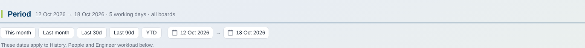</div>
          <figcaption><b>The range control in the Period heading.</b> One set of dates for History, People and Engineer workload.</figcaption>
        </figure>
        <figure class="wide">
          <div class="shot">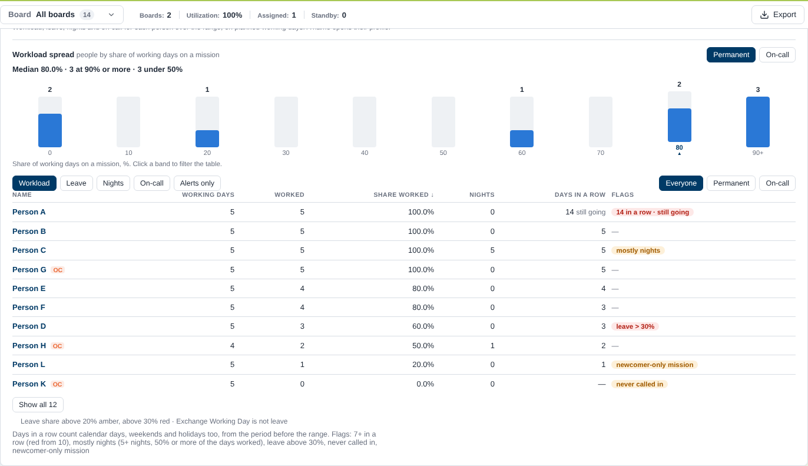</div>
          <figcaption><b>People: the spread chart and the table.</b> Ten bands show how many people work what share of their days; the median and the counts at 90% or more and under 50% sit above. Names open the profile.</figcaption>
        </figure>
        <figure>
          <div class="shot">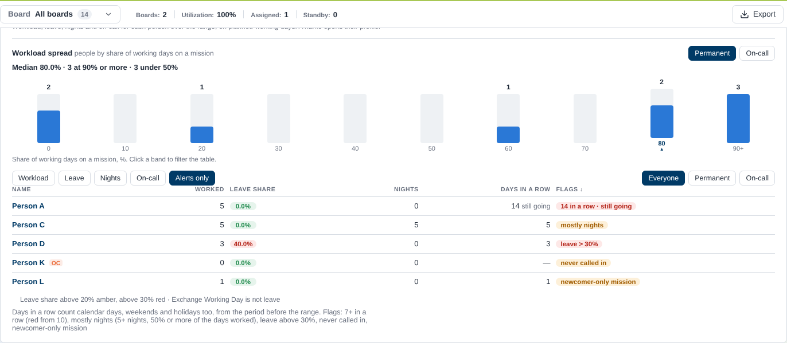</div>
          <figcaption><b>Alerts only.</b> Each flag in its own colour: red for 10 or more days in a row and for leave above 30%.</figcaption>
        </figure>
        <figure>
          <div class="shot">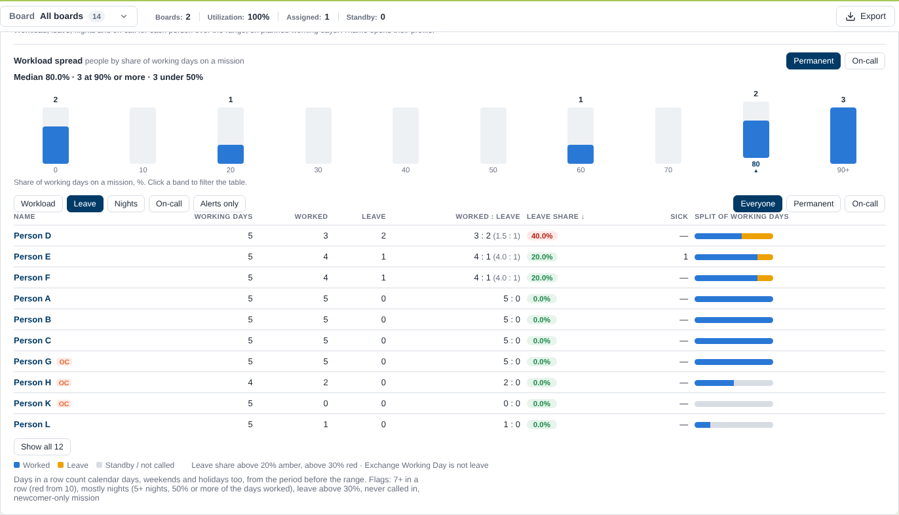</div>
          <figcaption><b>Leave view.</b> The old Worked vs leave table, with leave share amber above 20% and red above 30%.</figcaption>
        </figure>
        <figure class="wide">
          <div class="shot">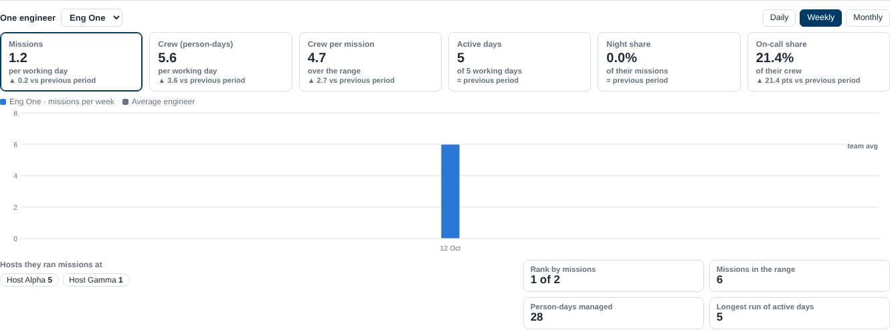</div>
          <figcaption><b>Engineer tiles against the previous period.</b> For example "▲ 0.2 vs previous period" under Missions.</figcaption>
        </figure>
        <figure class="wide">
          <div class="shot">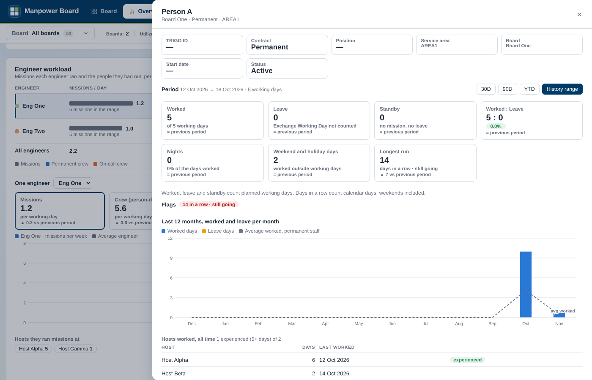</div>
          <figcaption><b>Employee profile.</b> Worked, leave, standby, Worked : Leave, nights, weekend days and longest run, each against the previous period. Period switch: 30D, 90D, YTD or the History range.</figcaption>
        </figure>
        <figure class="phone">
          <div class="shot">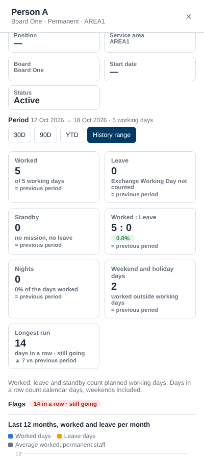</div>
          <figcaption><b>On a phone.</b> The profile opens full screen.</figcaption>
        </figure>
        <figure class="wide">
          <div class="shot">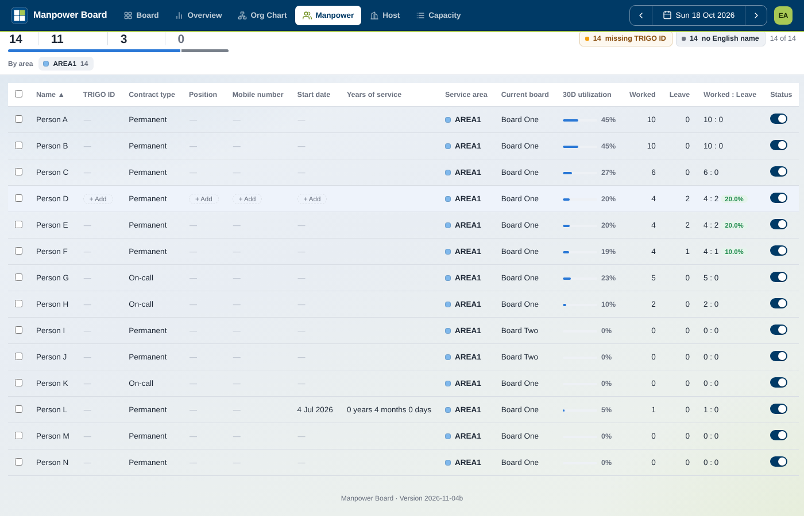</div>
          <figcaption><b>Manpower list.</b> Worked, Leave and Worked : Leave now equal the People table for the same person and range. Right-click a row for Profile.</figcaption>
        </figure>
      </div>
    </div>
  </section>

  <!-- ===================== B ===================== -->
  <section class="batch" id="batch-b">
    <div class="batch-head">
      <span class="letter">Batch B</span>
      <h2>Resigned, Workforce and the skills matrix</h2>
      <a class="pr" href="https://github.com/nutdanais/trigo-manpower-board/pull/102">PR #102</a>
    </div>
    <p class="lead">Three views of who the team is and who it depends on.</p>
    <div class="cols">
      <div class="changes">
        <p class="note">Needs <code>supabase/migration-2026-11-04-employee-exit.sql</code> for Resigned. Until it runs, the option is disabled with a note and everything else works as before.</p>
        <h4>Resigned status</h4>
        <ul>
          <li>Every Deactivate (menu, Edit panel, bulk bar, Status switch) asks <b>Resigned</b> or <b>Inactive for now</b>.</li>
          <li>The Manpower list shows a red Resigned pill, a Resigned filter option, a Resigned tile, and the Excel file says Resigned.</li>
        </ul>
        <h4>Workforce section</h4>
        <ul>
          <li>One bar per month: headcount by years of service, with joiners above and resigned leavers below.</li>
          <li>Tiles: headcount now, joiners, leavers, turnover and the share under 1 year. Names show on hover.</li>
        </ul>
        <h4>Skills matrix</h4>
        <ul>
          <li>Host tab gets <b>List | Skills matrix</b>: who worked each host, who is experienced (5 or more days), and which hosts are at risk (two or fewer active experienced people).</li>
          <li>Overview's Host coverage now uses the same rule, so the card and the matrix always agree.</li>
        </ul>
      </div>
      <div class="shots">
        <figure>
          <div class="shot">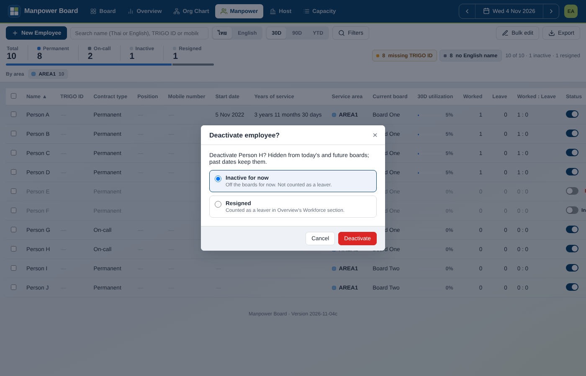</div>
          <figcaption><b>Deactivate asks why.</b> Inactive for now is the default.</figcaption>
        </figure>
        <figure>
          <div class="shot">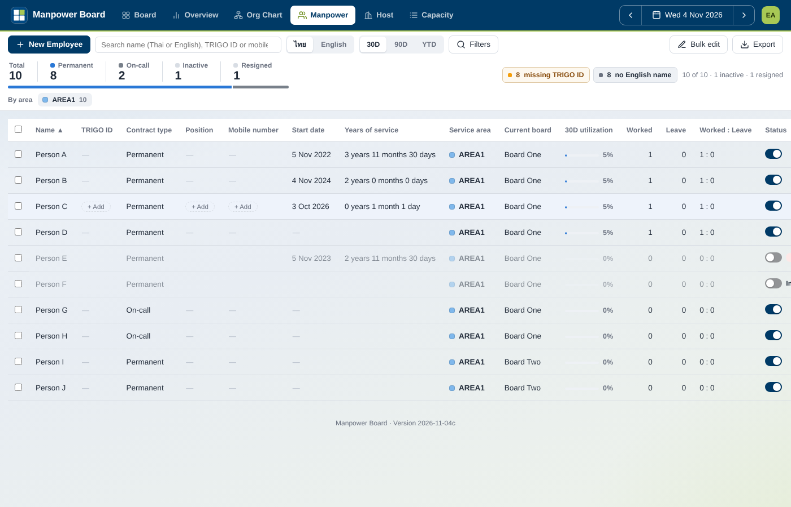</div>
          <figcaption><b>Resigned is separate from Inactive.</b> Its own tile and count; the pill sits in the Status column.</figcaption>
        </figure>
        <figure class="wide">
          <div class="shot">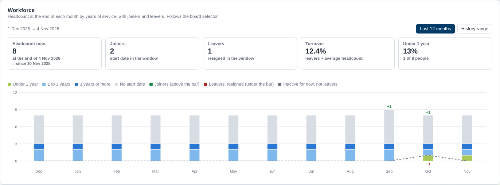</div>
          <figcaption><b>Workforce.</b> Twelve months of headcount by years of service. "+1" marks a joiner above a bar, "−1" a resigned leaver below it.</figcaption>
        </figure>
        <figure class="wide">
          <div class="shot">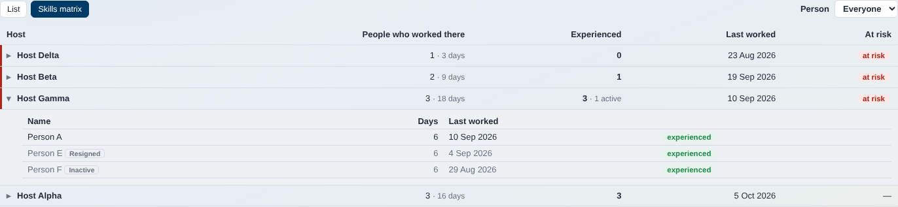</div>
          <figcaption><b>Skills matrix.</b> At-risk hosts come first. A row opens the people with their days; resigned and inactive people are greyed and tagged.</figcaption>
        </figure>
        <figure>
          <div class="shot">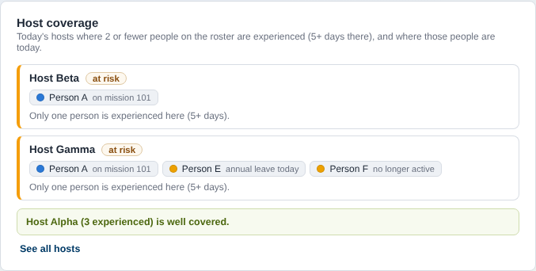</div>
          <figcaption><b>Host coverage.</b> Same rule as the matrix, with a "See all hosts" link.</figcaption>
        </figure>
        <figure class="phone">
          <div class="shot">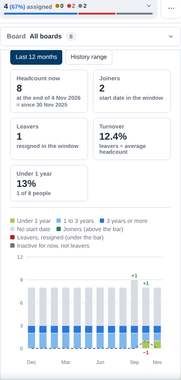</div>
          <figcaption><b>On a phone.</b> Tiles stack; the chart keeps its labels.</figcaption>
        </figure>
      </div>
    </div>
  </section>

  <!-- ===================== C ===================== -->
  <section class="batch" id="batch-c">
    <div class="batch-head">
      <span class="letter">Batch C</span>
      <h2>Chart toolbar and Boards &amp; areas</h2>
      <a class="pr" href="https://github.com/nutdanais/trigo-manpower-board/pull/103">PR #103</a>
    </div>
    <p class="lead">History's charts can now be grouped, compared and split by board, and a new section puts boards and service areas side by side.</p>
    <div class="cols">
      <div class="changes">
        <h4>History chart toolbar</h4>
        <ul>
          <li><b>Group by Day, Week or Month</b> on every tile. A week or month column opens its first day.</li>
          <li><b>Boards: Together or Side by side.</b> One small chart per board on one shared scale. Click a board's name to show only that board.</li>
          <li><b>On-call: Count or Share.</b> Share is on-call person-days out of all person-days on missions.</li>
        </ul>
        <h4>Compare with</h4>
        <ul>
          <li>In the Period heading: <b>Previous period</b> or <b>Same period last year</b> (the range moved back 364 days so weekdays line up).</li>
          <li>Deltas and a dashed comparison line follow it. Last year is loaded only when you choose it.</li>
        </ul>
        <h4>Boards &amp; areas</h4>
        <ul>
          <li><b>By board:</b> utilization, deployed, standby, leave, on-call share and net loans for the range.</li>
          <li><b>By service area:</b> what the area's hosts need against the people the area has, and how much other areas covered.</li>
          <li>A from → to table of loan person-days.</li>
        </ul>
      </div>
      <div class="shots">
        <figure class="wide">
          <div class="shot">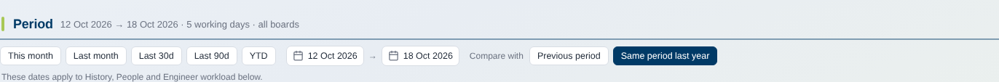</div>
          <figcaption><b>Compare with</b> sits next to the dates and applies to the whole group.</figcaption>
        </figure>
        <figure class="wide">
          <div class="shot">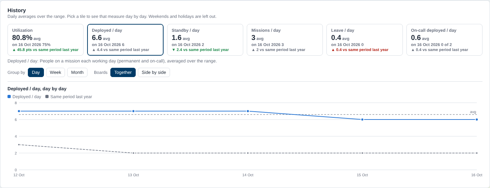</div>
          <figcaption><b>Group by and last year.</b> The toolbar under the tiles; the dashed grey line is the same period last year, and each tile's change names it.</figcaption>
        </figure>
        <figure class="wide">
          <div class="shot">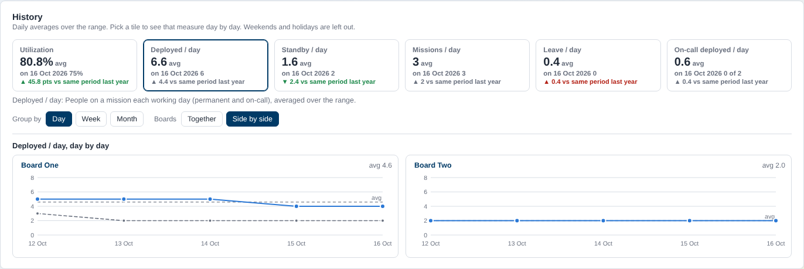</div>
          <figcaption><b>Side by side.</b> One chart per board, each with its average. A day opens that board.</figcaption>
        </figure>
        <figure class="phone">
          <div class="shot">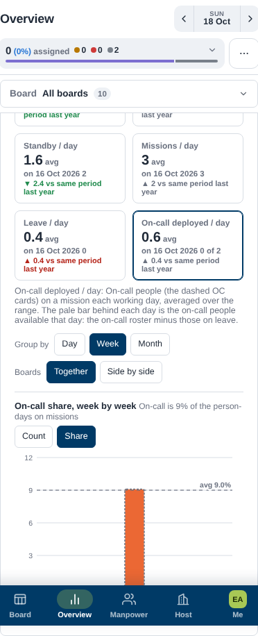</div>
          <figcaption><b>On-call share on a phone.</b> Week by week, with Count | Share.</figcaption>
        </figure>
        <figure class="wide">
          <div class="shot">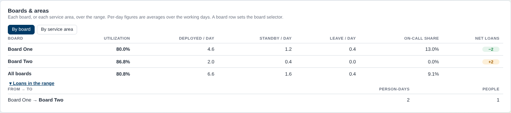</div>
          <figcaption><b>By board.</b> Net loans: Board One lent 2 person-days to Board Two. The loan table opens underneath.</figcaption>
        </figure>
        <figure class="wide">
          <div class="shot">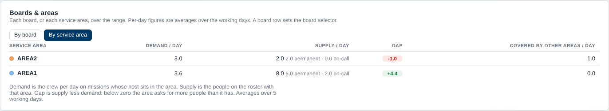</div>
          <figcaption><b>By service area.</b> AREA2 needs 3 people a day and has 2 (gap −1, red); one a day was covered from AREA1.</figcaption>
        </figure>
      </div>
    </div>
  </section>

  <!-- ===================== D ===================== -->
  <section class="batch" id="batch-d">
    <div class="batch-head">
      <span class="letter">Batch D</span>
      <h2>Monthly report and click a day</h2>
      <a class="pr" href="https://github.com/nutdanais/trigo-manpower-board/pull/104">PR #104</a>
    </div>
    <p class="lead">A report for management, made from the same numbers as the screen, and a check that every chart day opens its board.</p>
    <div class="cols">
      <div class="changes">
        <h4>Report button</h4>
        <ul>
          <li>Next to Export on Overview, for roles that can see History (also in the phone menu).</li>
          <li><b>Pick a month</b> (last month to begin with) or the History range. Compare with and the board come from the Period heading and the board selector.</li>
          <li><b>One checkbox per section:</b> Summary, History (choose the tiles, include charts), People, Engineer workload, Workforce, Boards &amp; areas, Skills risks.</li>
          <li><b>Names are off</b> until you tick Include names.</li>
          <li><b>PDF or Excel</b> (one sheet per section), in <b>English or Thai</b>. Your choices are remembered.</li>
          <li>The PDF and the Excel file are drawn from one set of data, built with the same functions as the screen.</li>
        </ul>
        <h4>Click a day, everywhere</h4>
        <ul>
          <li>Every chart of days opens its board on that day by click and by keyboard (Enter).</li>
          <li>Two gaps found and fixed: a day with no bar, and charts over a long range, had nothing to click.</li>
          <li>A week or month column opens its first day.</li>
        </ul>
      </div>
      <div class="shots">
        <figure>
          <div class="shot">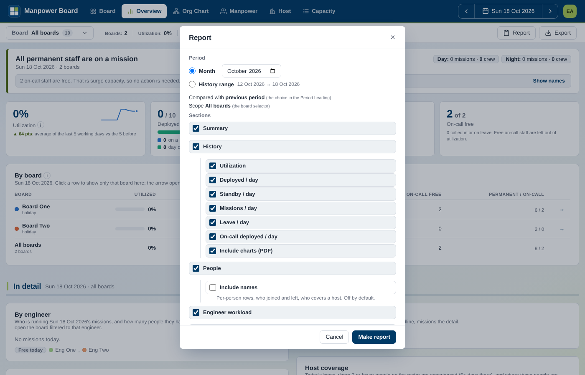</div>
          <figcaption><b>The Report dialog.</b> Period, then a checkbox per section; History's tiles and People's names options sit under their section.</figcaption>
        </figure>
        <figure class="phone">
          <div class="shot">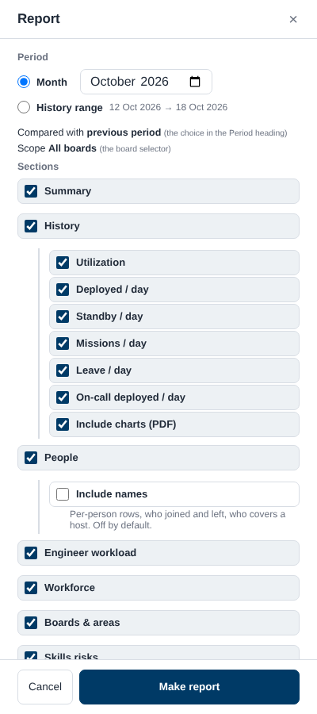</div>
          <figcaption><b>On a phone.</b> Opens from the ⋯ menu, full screen.</figcaption>
        </figure>
        <figure>
          <div class="shot">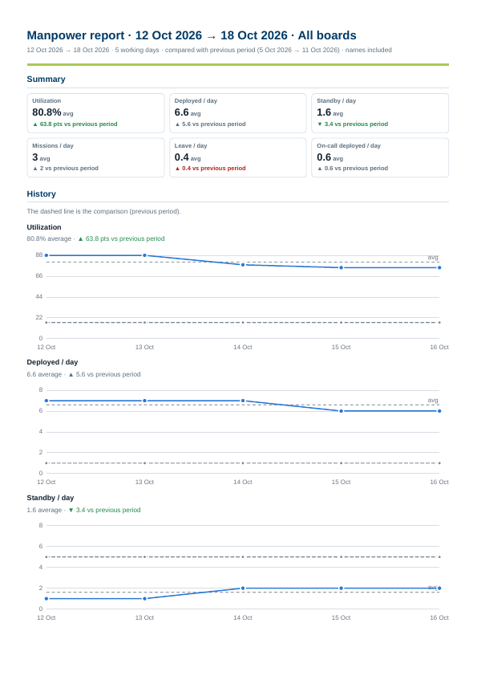</div>
          <figcaption><b>PDF, page 1.</b> Title "Manpower report · period · scope", the Summary tiles with their changes, then a chart per picked tile with the comparison dashed.</figcaption>
        </figure>
        <figure>
          <div class="shot">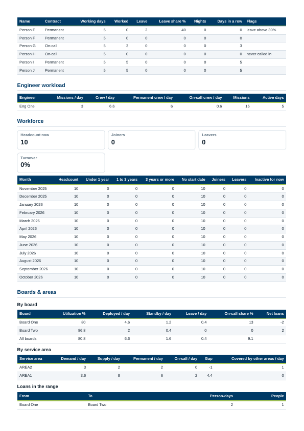</div>
          <figcaption><b>PDF, page 3.</b> Engineer workload, Workforce, Boards &amp; areas and loans as tables.</figcaption>
        </figure>
        <figure>
          <div class="shot">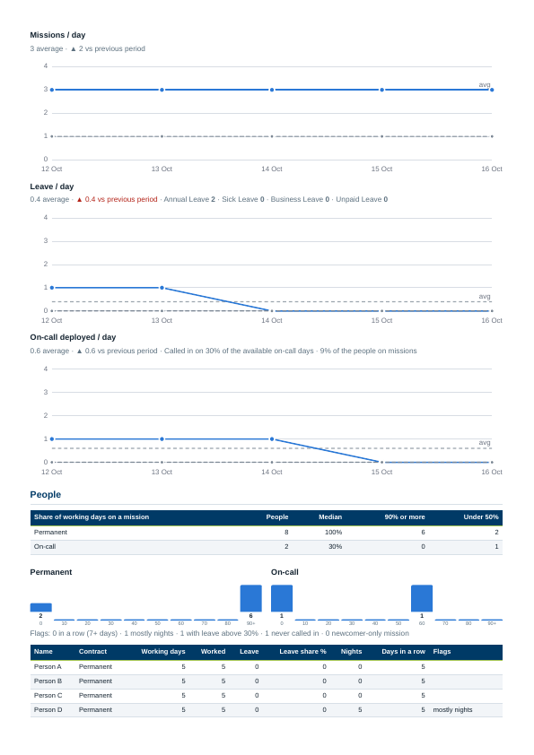</div>
          <figcaption><b>PDF, page 2.</b> People: the spread, the flag counts and, because names were ticked here, the per-person table.</figcaption>
        </figure>
        <figure>
          <div class="shot">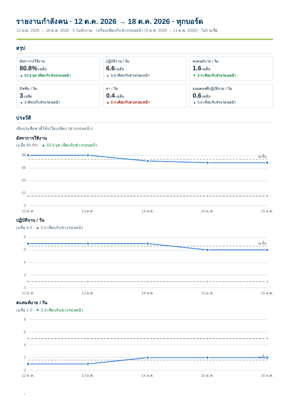</div>
          <figcaption><b>Thai.</b> The same report in Thai, whatever language the app is showing.</figcaption>
        </figure>
      </div>
    </div>
  </section>

  <footer>
    <strong>Pull requests</strong> (all drafts):
    <ul>
      <li><a href="https://github.com/nutdanais/trigo-manpower-board/pull/101">#101 People and the employee profile</a>, based on main</li>
      <li><a href="https://github.com/nutdanais/trigo-manpower-board/pull/102">#102 Resigned status, Workforce and the skills matrix</a>, based on #101</li>
      <li><a href="https://github.com/nutdanais/trigo-manpower-board/pull/103">#103 History chart toolbar, Compare with, Boards &amp; areas</a>, based on #102</li>
      <li><a href="https://github.com/nutdanais/trigo-manpower-board/pull/104">#104 Monthly report and click a day</a>, based on #103</li>
    </ul>
    <p>Screens use the test data set (people A to N, two boards), so the numbers are examples. After each merge, point the next pull request at main.</p>
  </footer>
</main>
